Ubuntu安装基础教程
作者：TeliuTe 来源：基础教程网
Win7/8 硬盘安装 Ubuntu 返回目录 下一课EasyBCD 可以方便地编辑 Win7 和Win8 的启动菜单项，操作中注意细心，下面来看一个练习；
下载 Ubuntu 的 desktop 光盘镜像iso文件，如 ubuntu-12.10-desktop-i386.iso：http://mirrors.163.com/ubuntu-releases/12.10/
其他下载地址可以参阅前面的课程；
1、下载安装 EasyBCD
1）EasyBCD个人版是免费的，可以在华军下载： http://www.onlinedown.net/soft/58174.htm，下载完后运行安装；
2）接下来的版权提示点“确定”一直到出现完成“Finish”；
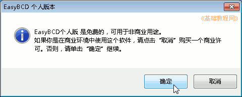
稍等会运行 EashBCD，以后自己在桌面上双击运行，在第一步要选择“简体中文”，然后点“Go”继续；
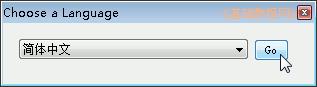
3）在出来程序窗口左侧栏，点击“添加新条目”；
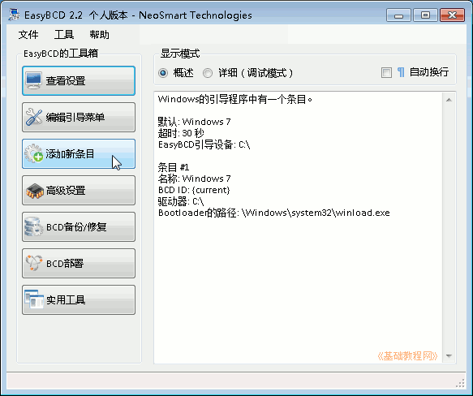
4）然后在右侧出来一个面板，点最右边的“NeoGrub”标签，再点它下边的“安装”按钮；
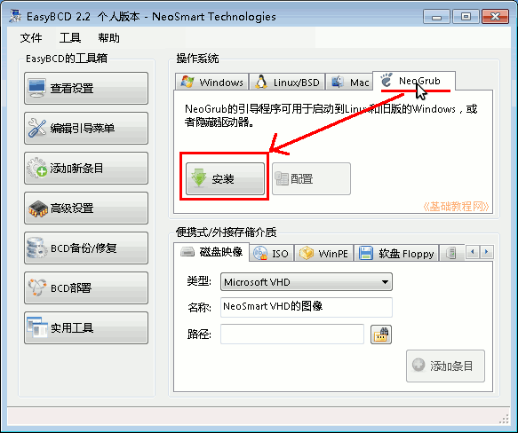
5）稍等安装完成，再点击它旁边的“配置”按钮；
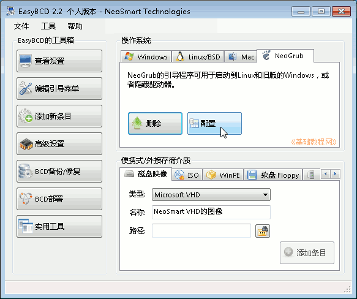
6）出来一个记事本窗口，删除里面的内容，复制下面的内容进去；
如果系统中有100M保留分区，要将第二句改成 (hd0,1)，检查的方法请参阅 基础1课程，第三句里红色的文件名处，也要改成自己下载的镜像文件名；
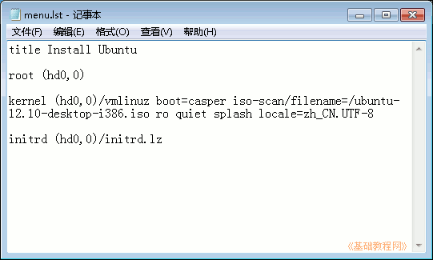
7）保存文件，关闭记事本，然后关闭 EasyBCD；
1）把下载的 Ubuntu 镜像文件复制到 C: 盘，用 7-zip 或 WinRAR 打开；
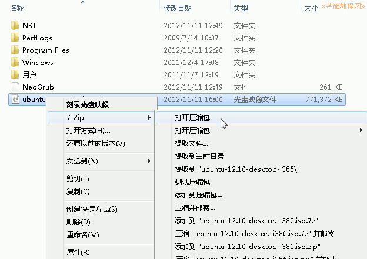
2）找到 casper 文件夹双击打开，里面有一个 i 开头和 v 开头的文件；
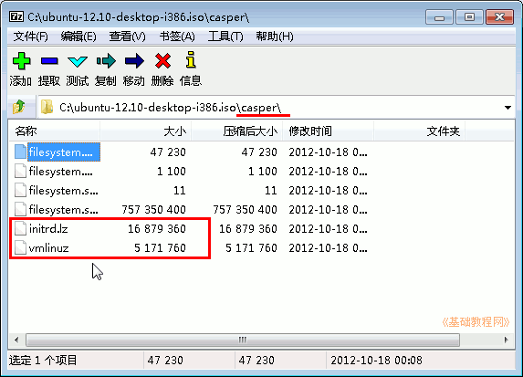
3）打开 C: 盘，把 casper 里的 initrd.lz 和 vmlinuz 拖到 C: 盘里，这时C:盘里有三个复制过来的文件；
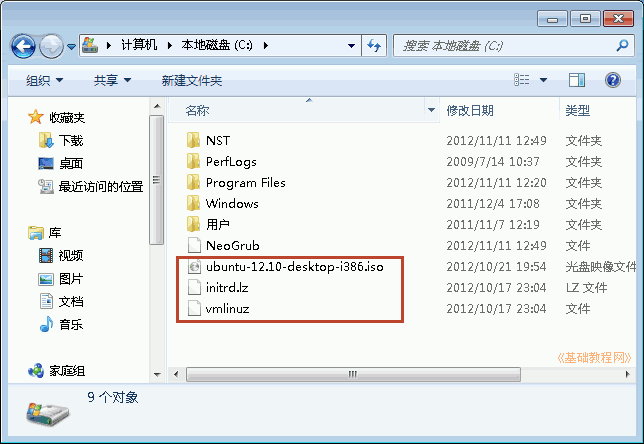
4）关闭C:盘文件夹窗口，重新启动计算机；
3、安装Ubuntu系统
1）重新启动计算机，在出现启动菜单时，按下方向键选择“NeoGrub 引导加载器”，按回车键进入；
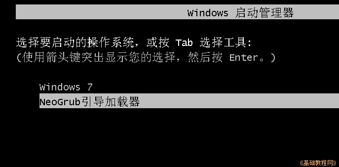
2）在接下来的 Install Ubuntu 菜单中，直接按回车键进入；
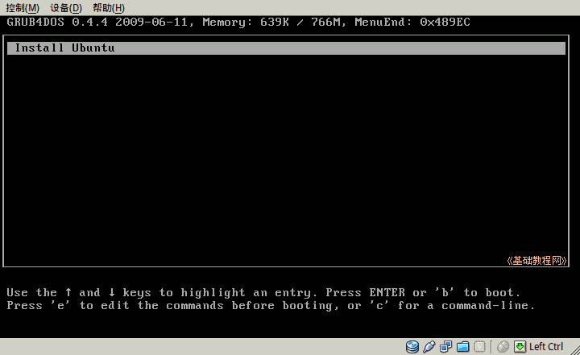
3）耐心等待系统加载，直到出现桌面，点一下左上角的圆圈按钮，稍等在旁边出来的文本框中输入字母 ter 然后点击下边出来的终端图标；
4）在出来的终端窗口中，输入 sudo umount -l /isodevice 然后按回车键；
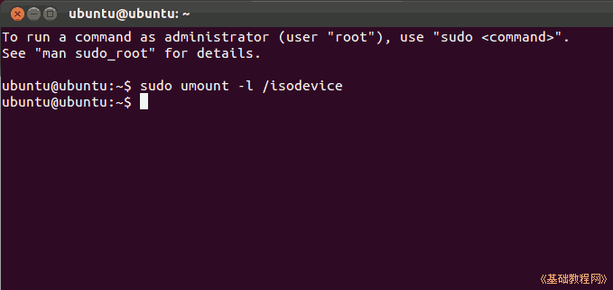
5）双击桌面左上角的“安装 Ubuntu”图标，稍等进入安装对话框；
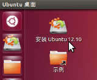
6）在“安装类型”这一步时，选择“其他选项”，然后点继续；
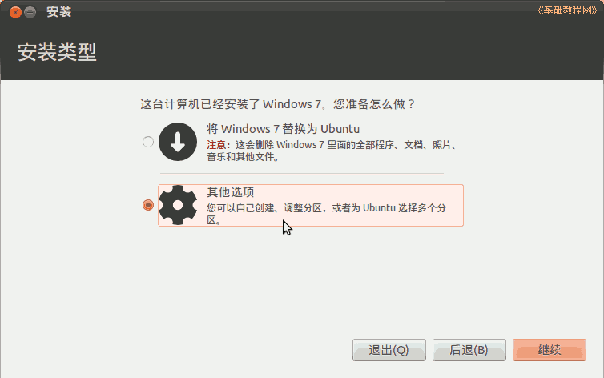
7）在分区这一步时，如果不更改，则由 Ubuntu 来引导 Windows，相对比较简单不需要第4步的操作，
点击下边的引导器位置下拉列表，可以将引导器安装到 Ubuntu 所在的分区，后面第4步再在Win7中添加引导项，这样不改变 Win7 的 MBR；
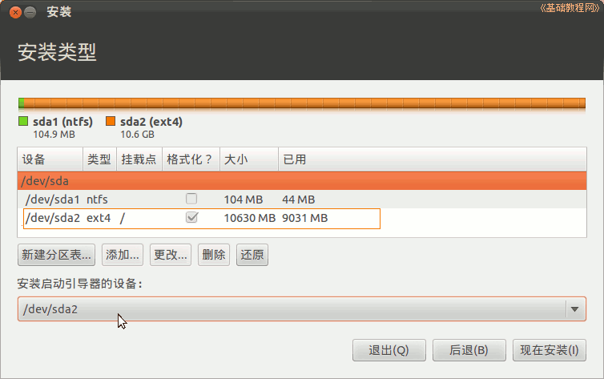
8）然后一步步安装完以后，重启计算机进入 Win7，把 C: 盘中的 Ubuntu 镜像文件和 initrd.lz 和 vmlinuz 删除；
9）启动 EasyBCD，点“添加一个项目－NeoGrub”，出来的面板下面点“删除”；
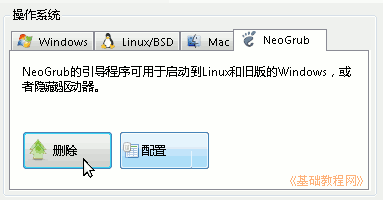
4、Win7引导双系统Ubuntu
1）如果在安装的分区那一步，把引导器装在了 Ubuntu 所在的分区，则需要在 EasyBCD 中添加 Ubuntu 的启动项；
2）启动 EasyBCD，点“添加一个项目－NeoGrub”，出来的面板下面点“配置”，删除原来的内容，将下面的内容粘贴到记事本里面；
如果 /boot 是单独分区的，使用下面这样的：
本节学习了 Win7 硬盘安装 ubuntu 的基本方法，如果你成功地完成了练习，请继续学习下一课内容；
本教程由86团学校TeliuTe制作|著作权所有
基础教程网：http://teliute.org/
美丽的校园……
转载和引用本站内容，请保留版权信息和本站链接。